| # | Place | Fiducial | Value | Footprint | Part Nr | Feeder | Rotation | Designator | X-Pos | Y-Pos | Rotation | State | Action | ||||||||
|---|---|---|---|---|---|---|---|---|---|---|---|---|---|---|---|---|---|---|---|---|---|
| {{i}} | {{Object.keys(part.designators).length}}x {{part.value}} | {{part.footprint}} | {{part.partnr}} | {{part.feeder}} | {{part.rot}} |
|
|||||||||||||||
| Name | Custom Settings | Rotation | State | Action | |||||
|---|---|---|---|---|---|---|---|---|---|
| {{name}} ({{feeder_type(entry.type)}}) |  |  |  | tray feeder is static |
position: {{entry.pos}}/{{entry.capacity}}
pitch: {{entry.pitch}}
x_offset: {{entry.offset[0]}} |
y_offset: {{entry.offset[1]}}
start_pos: {{entry.start[0] | round}} / {{entry.start[1] | round}}
end_pos: {{entry.end[0] | round}} / {{entry.end[1] | round}}
|
pick_pos: {{entry.pickpos[0] | round}} / {{entry.pickpos[1] | round}}
counter: {{entry.pos}}
x_offset: {{entry.offset[0]}} |
y_offset: {{entry.offset[1]}}
|
{{entry.rot}} | {{feeder_state(entry.state)}} |
feeders can be added or removed by editing 'context.json'
Debug View
{{name}}
{{name}}
{{entry.text}}